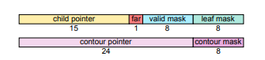
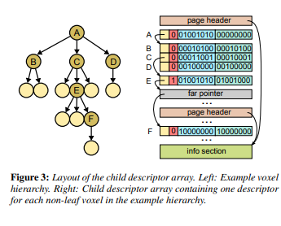

6/9/2022
SVO Ray Tracer Update #2
Creating a Contiguous Data Format
When I initially conceptualized what an octree might look like as a data structure I thought of using pointers. The root node will store a list of pointers to each of its children. Simple! Not so simple, however… First of all, pointers weren’t going to perform due to cache incoherency. But second of all, and perhaps the bigger issue, how was the GPU going to make sense of a list of pointers to CPU side memory? (spoiler: it can't)To solve both these issues I decided a contiguous format was going to be best. Luckily, NVIDIA had already solved the problem for me in their paper Efficient Sparse Voxel Octrees – Analysis, Extensions, and Implementation.
The octree is represented with a contiguous “block” of memory. Each entry in the block represents one voxel and its children (meaning leaf children need not be stored). NVIDIA has 64-bit entries. 32 of these bits are used to encode voxel validity and children locations. The other 32 are used for contour information.
NVIDIA's contiguous SVO format (credit: NVIDIA)

The 15-bit child pointer is a relative pointer to the location of the voxel’s children. The 1-bit far pointer determines if the child is farther than 15 bits worth of indices away (more on this later). The 8-bit valid mask is a bitmask that encodes which children voxels are actually present in the octree. The 8-bit leaf mask is a bitmask that encodes which of children voxels are leaves.
Visual explanation of how the child pointers work (credit: NVIDIA)

As mentioned above NVIDIA uses a 1-bit far pointer, which in turn means the child pointer points to a bigger 32-bit far pointer to find the children nodes. However, since I’m not implementing contour information, I decided to forgo the far pointer and always use a 32-bit child pointer. This means each of my entries is still only 64-bits:
• 32-bit child pointer
• 8-bit valid mask
• 8-bit leaf mask
• 16-bits of padding for alignment
Uploading To The GPU
After I created my contiguous data format I added another constant buffer to the pixel shader to store this information. I wasn’t sure of a way to have a variable sized array in my pixel shader's constant buffer. So, for now, the buffer just has a hardcoded maximum size.I also ran into a lot of pain wrestling with DX11, trying to make the proper API call to set two constant buffers. Finally, I realized I needed to call PSSetConstantBuffers once while passing in an array of ID3D11Buffer pointers after creating my constant buffers.
ID3D11Buffer* constBuffers[2];
…
dev->CreateBuffer(&constBuffDesc0, nullptr, &constBuffers[0]);
dev->CreateBuffer(&constBuffDesc1, nullptr, &constBuffers[1]);
…
devCon->PSSetConstantBuffers(0, 2 /*number of buffers*/, constBuffers /*array of buffers*/);
…
devCon->UpdateSubresource(constBuffers[0], 0, nullptr, &appInfo, 0, 0);
devCon->UpdateSubresource(constBuffers[1], 0, nullptr, svo.vec().data(), 0, 0);
It didn’t help that RenderDoc only cared to show the constant buffer if it was actually being used for the pixel shader output. I’m not sure if the shader compiler is optimizing the constant buffer out, or RenderDoc is just being bad. Either way, make sure the buffers are actually contributing to the color output, or else they just won’t show up in RenderDoc (and you’ll start to go extra crazy when trying to debug).
Basic Traversal
The biggest limitation of my ray tracer at this point was that it could only render the root voxel. It was time to begin implementing the core of this project, the ray traversal algorithm. Again, I consulted that nifty NVIDIA paper for some guidance…NVIDIA's traversal algorithm (credit: NVIDIA)

Visually, the algorithm is intuitive. Each voxel is visited in the order the ray intersected it, with voxels higher in the hierarchy being visited first.
The actually implementation of this is somewhat intuitive, but still fairly complex. NVIDIA provides some pseudo-code for the algorithm, and it was clear to me I needed to start small to understand the basic ideas first.
One core idea of this algorithm is utilizing the entry and exit points of the ray when it intersects with a voxel. The entry point implies which of the children voxels the ray intersected with, and the exit point implies which of the children voxels the traversal should visit next. The exit point of a child implies if the ray left the root voxel, if it matches root voxel intersection exit point.
I decided to use this information to write a very basic traversal algorithm. My algorithm will traverse all children of a given root voxel, but does not recurse down to traverse the next level of children.
To demo this, I created an interesting shape, added a moving light, and added some color for visualization. Red means the ray instantly hit that child and didn’t require traversal. Green means the ray intersected eventually, but required traversal. Purple means the ray left the root. Blue means it didn’t intersect the ray at all. White is a visualization of the light’s current location. Here’s a quick demo video!
What's Next?
Next steps:• Traversing down the hierarchy
• Rendering two or more levels of depth in the octree